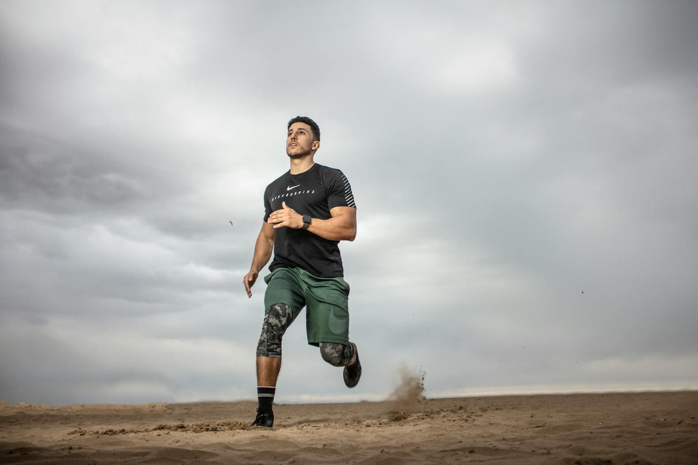

Welcome to your Fitness Journey!
Track your daily activities, improve your nutrition, and stay motivated towards your fitness goals.
Motivation
"The only bad workout is the one that didn’t happen!" – Unknown
External Health Resources
For more information, visit Healthline for expert health advice.